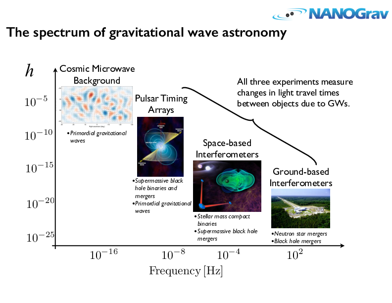

A new era of gravitational-wave astronomy
NANOGrav congratulates our LIGO colleagues on their discovery of gravitational waves from a binary black hole system. This result is a major milestone, not only in the field of gravitational-wave astronomy, but in the history of science!
LIGO and NANOGrav are complementary efforts covering different regions of the gravitational-wave spectrum. Pulsar timing arrays like NANOGrav are sensitive to gravitational waves with periods of years, while LIGO is sensitive to waves with periods near one-hundreth of a second or less. Other projects are working to detect the Hubble-length primordial waves that leave an imprint in the polarization of the Cosmic Microwave Backgroun (CMB), while future space-based instruments such as eLISA are tuned to detect waves with hour-long periods. Each of these experiments explores different time scales, originating from a wide range of objects and phenomena in the universe.
With the LIGO discovery, the field of observational gravitational-wave astronomy is now a reality. NANOGrav looks forward to detection of many additional, and other types of, sources with results from LIGO and other ground-based instruments, as well as the CMB and eventually the space-based gravitational-wave communities. Together we are opening a completely new window on the Universe.
About NANOGrav: Pulsar timing arrays are on track to detect long-period gravitational waves by measuring their effects on the light-travel times of pulses from rotating neutron stars (pulsars). NANOGrav monitors a set of pulsars that together form a Galactic scale gravitational-wave observatory. Our detector will be used to study supermassive black hole binaries in order to understand the morphology, kinematics, gas content, and feedback mechanisms of galaxies. Pulsars can also be used to detect gravitational waves from topological defects in space time called cosmic strings, which are predicted by some high energy physics models.
Race to Detect Gravitational Waves Advances with New NSF-funded NANOGrav Physics Frontiers Center
The National Science Foundation (NSF) has awarded the North American Nanohertz Observatory for Gravitational Waves (NANOGrav) $14.5 million over 5 years to create and operate a Physics Frontiers Center (PFC).
The NANOGrav PFC will address a transformational challenge in astrophysics: the detection of low-frequency gravitational waves. Gravitational waves are elusive ripples in the fabric of space-time, which theories predict should arise from extremely energetic and large-scale cosmic events, such as orbiting pairs of massive black holes found at the centers of merging galaxies, phase transitions in the very early Universe, or as relics from cosmic inflation, the period just after the Big Bang when all of the Universe that we can see expanded rapidly from a minuscule volume in a tiny fraction of a second.
In Einstein’s theory of gravity, these events produce waves that distort, or ripple, the actual fabric of the cosmos as they emanate throughout space. The waves have such a long wavelength—significantly larger than our Solar System—that we cannot build a detector large enough to observe them. Fortunately, the Universe itself has created its own detection tool, millisecond pulsars—the rapidly spinning, superdense remains of massive stars that have exploded as supernovas. These ultra-stable stars are nature’s most precise celestial clocks, appearing to “tick” every time their beamed emissions sweep past the Earth like a lighthouse beacon. Gravitational waves may be detected in the small but perceptible fluctuations—a few tens of nanoseconds over five or more years—they cause in the measured arrival times at Earth of radio pulses from these millisecond pulsars.
NANOGrav was founded in 2007 and at the time consisted of 17 members in the United States and Canada. It has since grown to 55 scientists and students at 15 institutions. The NANOGrav PFC will provide funding for 23 senior personnel, 6 postdoctoral researchers, 10 graduate students, and 25 undergraduate students distributed across 11 institutions.
Xavier Siemens, a physicist at the University of Wisconsin-Milwaukee, is the Principal Investigator (PI) for the project and will serve as Director of the Center. Maura McLaughlin, an astronomer at West Virginia University, will serve as Co-Director.
NSF currently supports nine other PFCs, which range in research areas from theoretical biological physics and the physics of living cells to quantum information and nuclear astrophysics. By bringing together astronomers and physicists from across the United States and Canada to search for the telltale signature of gravitational waves buried in the incredibly steady ticking of distant pulsars, NANOGrav is advancing the PFC mission to "foster research at the intellectual frontiers of physics” and to “enable transformational advances in the most promising research areas.”
“NANOGrav is now poised to detect low-frequency gravitational waves,” said Siemens. “This Center will ensure that researchers have the resources necessary to explore one of the most exciting frontiers in all of physics and astronomy.”
This research makes use of the unique capabilities and sensitivity of the Arecibo Observatory in Puerto Rico and the National Radio Astronomy Observatory’s Green Bank Telescope (GBT). The GBT is located in the National Radio Quiet Zone, which protects the incredibly sensitive telescope from unwanted radio interference, enabling it to study pulsars and other astronomical objects. Arecibo is the largest single dish radio telescope in the world today.
“NANOGrav is fortunate to have access to the two most sensitive telescopes in the world for this groundbreaking research”, McLaughlin stated. “Furthermore, as many of our observations are performed by students, the telescopes are serving a vital role in creating a pipeline for science and technology fields.”
The research performed by the PFC is distributed among the participating institutions and members of NANOGrav. The personnel funded by the NANOGrav PFC include:
California Institute of Technology- Curt Cutler
- Joseph Lazio
- Walid Majid
- Michele Vallisneri
- James Cordes
- Rachel Bean
- Adam Brazier
- Shamibrata Chatterjee
- Andrea Lommen
- Fronefield Crawford
- David Nice
- Neil Cornish
- Zaven Arzoumanian
- Paul Demorest
- Scott Ransom
- Daniel Stinebring
- Fredrick Jenet
- Joseph Romano
- David Kaplan
- Xavier Siemens
- Duncan Lorimer
- Maura McLaughlin
- Sean McWilliams
They collaborate closely with Ingrid Stairs at the University of British Columbia in Vancouver, Canada, and Victoria Kaspi at McGill University in Montreal, Canada.
NANOGrav in the News
- New York Times: Scientists Chirp Excitedly for LIGO, Gravitational Waves and Einstein
- National Geographic: Found! Gravitational Waves, or a Wrinke in Spacetime.
- Gizmodo: We've Found Gravitational Waves. Now What?
Press Images
{kind=link}
{kind=link}
NANOGrav Press Officer
Dr. Elizabeth Ferrara
elizabeth.ferrara@nanograv.org
(301) 286-7057


This material is based in part on work supported by the National Science Foundation under Grant Number 968296. Any opinions, findings and conclusions or recommendations expressed in this material are those of the author(s) and do not necessarily reflect the views of the National Science Foundation.